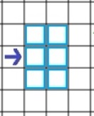

In FireBreak, your objective is to protect houses from being consumed by a spreading fire for as long as possible.
You do this by purchasing and placing firemen around the map in order to protect certain areas.
Cash is accumulated automatically at a rate of 2/second and a fireman costs 1 cash. If the player loses 4 of the 6 houses, the game is over
and their score (the number of seconds they survived) is displayed.
The whole game is controlled by first left clicking on which orientation of fireman you would like to select and then
left clicking which grid space you would like to place the unit.
The firemen cover a 2x3 area in water relative to their orientation as shown to the right, each of these spaces has a probability of extinguishing any fire contained in each square every second. However it is important to note that water-covered areas are not less-likely to being ignited and as such firemen must be placed in anticipation of the fire spreading.
The fire spreads every 5 seconds (indicated by a timer on the right), each non-ignited square adjacent to at least one ignited square has a chance to ignite relative to the number of adjacent ignited squares. The player must decide whether they would rather focus their resources on completely dousing one area to prevent further spreading or attempt to maintain control over the whole play area.